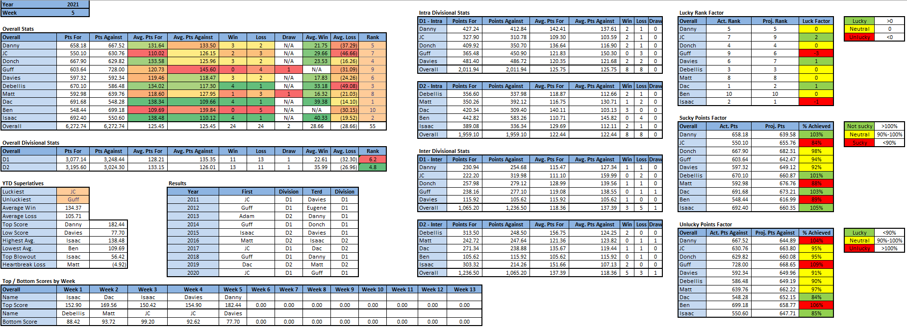
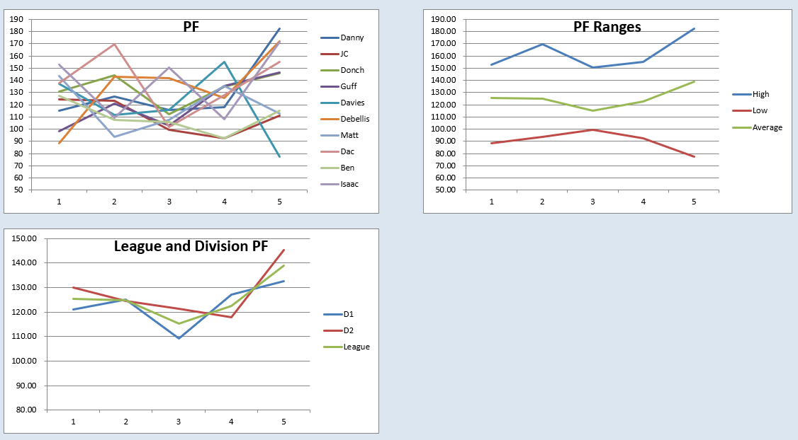

Power Rankings
WEEK 5 POWER RANKINGS
It’s in god’s hands now
- Dac (-): Dac followed up his big win last week vs. Isaac with another divisional win, albeit vs. a much inferior opponent. Led by Lamar Jackson’s 50 point week, Dac was able to blow by Matt, despite it being a little too close for comfort in the 1st half of MNF. Kyle Pitts had his coming out game, Mattison continued to be the best cuff in the league, and Deebo Samuel had yet another solid game. A week 6 matchup again vs. Isaac (who even makes these schedules) will be another tough test for Dac as he’ll be without David Montgomery’s 23 points (IR) and Deebo Samuel’s 34 points (bye) in the showdown of the D2 Juggernauts.
- Isaac (+1): Isaac needed a cakewalk matchup after losing to Dac last week and got it in the form of the random assortment of names his opponent Ben calls a team. Isaac put up a massive 171 points, which amazingly was only the 3rd highest score of the week. It was enough, however, for Isaac to top his previous record for biggest blowout with a new 56 point margin of victory. Coincidentally, a 56 point margin was also the average margin when Isaac and Ben used to play Halo back when they were friends.
- Debellis (+2): Debellis won the battle of the 3 game win streakers against Donch with a 172 point week. Derrick Henry continues to be a monster, putting up his 2nd three touchdown week, while MAndrews had a career day with 36 points. Out of Debellis’ 9 starters, 6 scored over 20 points. A trip to the IR for easily replaceable CEH was the only thing holding this back from being Debellis’ perfect weekend.
- Donch (-2): Donch had an impressive 146 point week but came up very short against Debellis’ breakout week. There was literally nothing Donch could’ve done roster wise to change his fate this week, as he started his near optimal lineup. Through 5 weeks, Donch now has the top 2 highest losing scores, 131 and 146 points.
- Danny (+1): Danny had his best performance of his entire fantasy career and basically needed it just to beat the Terd. Danny had 3 scorers over 30, with his QB & top 2 WRs combining for 117 points alone! Despite this miracle of a week for Danny, he does still have to suffer through yet another multi-week Saquon injury and living with the fact that he would be proud owner of the league’s all time top score if he had just started Antonio Brown instead of Tee Higgins.
- Davies (-2): Davies went from top score last week to bottom of the barrel this week, good for a 50% scoring reduction week over week. This week’s dumpster fire was all on Davies, as he left 51 Herbert QB points and 27 Gaskin RB points on his bench in exchange for Stafford’s 19 and Drake’s 2. A little managerial foresight would’ve turned this embarrassing loss into a blowout for Davies. The bottom 5 players on Davies' team this week combined for 12 points, with 40% of those players scoring 0!
- JC (+1): JC’s string of bad luck has finally reversed as he received all the luck this week. After another subpar week and only 111 points to show for it, JC seemed destined to continue his free fall as he posted the 2nd lowest score of the week. However, karma came raining down from the heavens as he faced the lowest score of the week (and season) and parlayed his 111 points into a 33 point victory. If that wasn’t lucky enough, JC miraculously passed a test he did not give himself the usually recommended days to prepare for.
- Matt (-1): Matt’s team continued to be unimpressive, scoring a paltry 113 points. Things don’t appear to be turning around for Matt any time soon either. Matt is the proud owner of the two biggest WR underachievers in ARob and Diggs. In addition to that, he’s opted to construct his bench entirely of RB cuffs and dumpy WRs that probably wouldn’t get picked up by anyone if he dropped them.
- Guff (-): After getting quite possibly the best performance his dumpy team is capable of, Guff came up 36 points short of Danny. His gang of RB1s finally performed well in the same week scoring 54 points, while he was also rewarded handsomely with 27 points from Chase, who was thankful to finally lock in his spot in the line up. It is always heartbreaking to see someone try so hard and come up empty handed, but it’s weeks like this that will make Guff hold that week 4 tie near and dear to his dumpy heart.
- Ben (-): Ben had an awesome week, beating his projection for the 2nd time this season. While this week’s 1 point overscoring of projected points isn’t quite as impressive as his week 1 two point overscoring of projected points, Ben needs all the moral victories he can get after this disaster of a week and season. This week alone, Ben lost his mediocre QB, his mediocre RB (who he had to be reminded to sub out), his mediocre TE (who he kept in his line up), and ironed a shirt for 4 hours to immediately place it in a suitcase for 4 hours instead of socializing with his friends.

